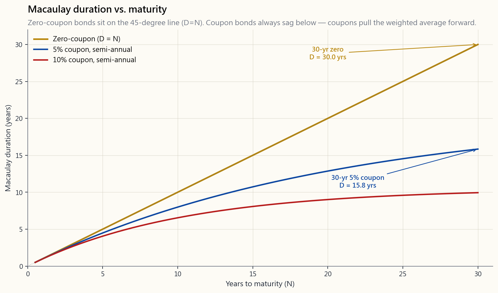
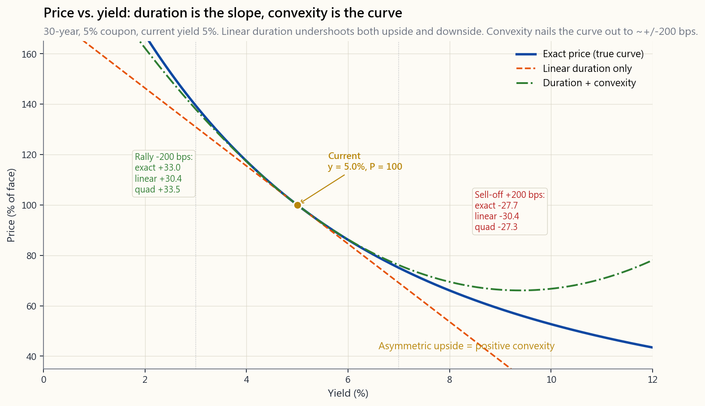

Week 32: Duration and Convexity — Bond Price Sensitivity Beyond Macaulay
1. Why This Is Important
In Week 5 you learned that a bond is four numbers and a calendar, and that price is just discounted cash flow. In Week 18 you learned that the discount rate is the universal denominator of finance. In Week 31 you learned to read the curve. This week you learn the verb that connects those nouns: how much.
How much does my bond fund lose when the 10-year yield jumps 50 bps? How much does my pension liability move when the curve flattens? How much of a TLT drawdown is "normal" versus "regime change"? These are not abstract questions. They are the daily P&L of every fixed-income position on earth, and they are answered by two numbers — duration and convexity — calculated from the bond contract you already know.
You need to internalise four things from this lesson.
cash-flow-weighted average time until you get your money back, which equals the elasticity of price to yield. A 10-year coupon bond has a duration around 8, not 10. A 30-year zero-coupon bond has a duration of exactly 30. Confusing duration with maturity is the single most common mistake in fixed income, and it cost a generation of "10-year Treasury" buyers in 2022 the chance to measure their own risk before the move.
small yield moves, the linear duration approximation is fine. For large moves (the 2022 yields-tripling type of move), convexity adds back the curvature you've been ignoring. On a 30-year Treasury, ignoring convexity over a 300 bps move misstates the P&L by several percentage points. Convexity is also positive for straight bonds — a free asymmetry in the holder's favour, which gets paid for in lower yields on the long end.
single-number "modified duration: 6.2 years" is a portfolio summary, not a hedging tool. Real fixed-income desks decompose duration along the curve — 2-year KRD, 5-year KRD, 10-year KRD, 30-year KRD — and hedge each bucket separately because the curve does not move in parallel. Twists, flatteners, and steepeners are the daily reality.
vol-tail-wags-dog).** TLT, the 20-year-plus Treasury ETF with a modified duration around 17, fell about 33% in 2022 — a worse calendar year than the S&P 500 in 2008. The bonds did exactly what their duration said they would do. The investors — many of whom thought "Treasuries are safe" — got blindsided because they never looked up their own duration. The 40-year tail of falling yields had wagged the entire risk-perception dog.
2. What You Need to Know
2.1 Macaulay Duration — The Weighted Average Maturity
Frederick Macaulay defined duration in 1938 as the weighted average time until a bond's cash flows arrive, where each weight is the present value of that cash flow as a share of the bond's price:
$$ D_{\text{Mac}} \;=\; \frac{1}{P} \sum_{t=1}^{m N} \frac{t}{m} \cdot \frac{C_t}{(1+y/m)^{t}} $$
Three properties follow immediately from this formula.
- **A zero-coupon bond's Macaulay duration equals its maturity
- A coupon bond's duration is strictly less than its maturity.
- Higher coupon -> lower duration. More cash arrives early, so
week32_duration_curve.png shows three duration curves stacked
inside the same maturity axis: the 45-degree line is zero-coupon, the 5%-coupon curve sags below it, and the 10%-coupon curve sags further still.

Macaulay's units are years. That's the only number you can describe to a non-quant friend without losing them in calculus. But for hedging P&L, we want a different unit: percent price change per percent yield change. That is modified duration.
2.2 Modified Duration — Price Sensitivity in Percent
Modified duration is Macaulay duration divided by one period of yield compounding:
$$ D_{\text{mod}} \;=\; \frac{D_{\text{Mac}}}{1 + y/m} $$
Why this divisor? Because it converts "weighted average time" into the linear price-yield slope:
$$ \frac{\Delta P}{P} \;\approx\; -\,D_{\text{mod}} \cdot \Delta y $$
Read it out loud: *for a small yield move $\Delta y$, the percentage price change is about minus modified duration times the yield move.* A 10-year Treasury at 4% with $D_{\text{mod}} = 8.1$ years loses about 8.1% of its price for each 1% rise in yield, and gains 8.1% for each 1% fall. The minus sign is the inverse price-yield relationship from Week 5, now quantified.
Three working numbers worth memorising for April 2026:
- 2-year T-note, $D_{\text{mod}} \approx 1.9$. A 50 bps move moves
- 10-year T-note, $D_{\text{mod}} \approx 8.1$. A 50 bps move moves
- 30-year T-bond, $D_{\text{mod}} \approx 17.0$. A 50 bps move moves
Same yield curve, three very different sensitivities. This is why "I own Treasuries" is not a risk statement. The maturity matters.
2.3 Effective Duration — When Cash Flows Aren't Fixed
Modified duration assumes the cash-flow schedule is fixed. That is true for vanilla Treasuries and investment-grade corporates. It is false for callable bonds, putable bonds, and the entire mortgage-backed securities (MBS) universe, where the cash flows themselves move with rates — homeowners refinance when rates fall, extend when rates rise.
For these "rate-dependent cash flow" bonds, duration must be measured numerically by shocking the curve up and down and remeasuring price:
$$ D_{\text{eff}} \;=\; \frac{P_{-} \;-\; P_{+}}{2 \cdot P_0 \cdot \Delta y} $$
where $P_-$ is the price after a downward parallel shock of $\Delta y$, $P_+$ is the price after an upward shock, and $P_0$ is today's price. For a vanilla Treasury, effective duration matches modified duration to several decimals. For a 30-year MBS, effective duration is much shorter than modified duration when rates fall (the prepay option kicks in) and much longer when rates rise (extension risk). That asymmetric profile is negative convexity, and it is the reason MBS portfolios behaved so badly in 2022 — they extended into the rate hike instead of contracting away from it.
2.4 Convexity — The Curvature Term
Duration is a tangent line. The price-yield curve is a curve. The gap between them is convexity. Taylor-expand price as a function of yield around the current yield $y_0$, keep two terms instead of one, and divide by price:
$$ \frac{\Delta P}{P} \;\approx\; -\,D_{\text{mod}} \cdot \Delta y \;+\; \tfrac{1}{2} \cdot C \cdot (\Delta y)^{2} $$
with convexity defined as the second derivative scaled by price:
$$ C \;=\; \frac{1}{P} \cdot \frac{d^{2}P}{d y^{2}} $$
The image week32_convexity_payoff.png shows all three lines on top
of each other for a 30-year, 5%-coupon bond at 5% yield: the true
price-yield curve, the linear duration approximation, and the
duration + convexity quadratic. For a 100 bps move the duration
line is fine. For a 300 bps move (the 2022 type of move) the linear
approximation undershoots the gain on the rally side and overshoots
the loss on the sell-off side.

That asymmetry is the central feature: **for a straight bond, convexity is always positive, and it always works in the holder's favour**. A 100 bps rally produces a slightly bigger price gain than a 100 bps sell-off produces in price loss. The market knows this, which is why long-bond yields embed a small "convexity discount" relative to where pure expectations would put them.
2.5 Key-Rate Durations — The Curve Doesn't Move in Parallel
The single number $D_{\text{mod}} = 8$ assumes a parallel shift — every point on the curve moves by the same amount. In reality the curve twists. Short rates move on Fed policy. Long rates move on inflation expectations and term premium. The 2022 sell-off was a bear flattener (short rates up faster than long); the 2024 rally was a bull steepener (long rates down faster than short). Neither is parallel.
Key-rate duration (KRD) decomposes total duration into the contribution from each maturity bucket. Standard buckets are 3M, 2Y, 5Y, 10Y, 30Y. For a 10-year bullet Treasury, almost all of the duration sits in the 10Y bucket. For a 30-year MBS, duration is spread across 5Y, 10Y, and 30Y buckets because the prepay option makes the effective cash flow date sensitive to multiple parts of the curve. A bond fund manager hedging a portfolio doesn't short "Treasury duration" — they short specific futures contracts (TU at 2Y, FV at 5Y, TY at 10Y, US at 30Y) sized by KRD bucket. That is how professionals actually run a duration-neutral book.
For the retail investor: don't memorise KRDs. Just know that when your bond ETF prospectus reports a single duration number, it has already collapsed five-or-more dimensions into one, and that collapse is wrong by several percent of NAV in any non-parallel move. If you own a barbell (Week 31's barbell strategy), your KRD profile is fundamentally different from a bullet of the same total duration.
2.6 The 2022 TLT Drawdown — Duration Risk Made Visible
iShares 20+ Year Treasury Bond ETF (TLT) is the canonical long-bond proxy. Its modified duration sits around 17 years. In 2022 the 30-year Treasury yield rose from about 1.9% to about 4.0%, a move of 210 bps. Linear duration predicts:
$$ \frac{\Delta P}{P} \;\approx\; -\,17 \cdot 0.0210 \;=\; -35.7\% $$
Convexity gives some back. With long-bond convexity around 350, $\tfrac{1}{2}\cdot 350 \cdot (0.021)^2 = +7.7\%$. Net prediction: about $-28\%$. TLT actually delivered roughly $-31\%$ on price plus about $+2\%$ in coupons, for a total return near $-29\%$. The formula nailed it within a percent.
Two things to take from this. First, the math worked — there was no market dysfunction, no failure of the model. Second, the people holding TLT did not do this calculation in advance. Many bought "Treasuries" expecting safety in a Fed hiking cycle, never having asked the question "what is my duration." The vol tail (SOUL #6) wagged the dog: a regime that had run for 40 years made everyone forget that long Treasuries can lose a third of their value in a year. Duration is the antidote — but only if you actually compute it before you buy.
2.7 Putting Duration to Work — Three Practical Rules
the money in 5 years, hold bonds with duration around 5. The reinvestment-rate risk and price risk cancel each other out roughly at the duration horizon — this is immunisation, the foundation of pension and insurance bond management.
moves.** For yield changes within +/-50 bps, linear duration is accurate enough. Beyond that, use the convexity-corrected quadratic. Beyond +/-200 bps, reprice the bond directly from cash flows — the approximation breaks down. The interactive lab below lets you watch all three predictions side by side as you slide the rate shock.
wall.** Open the prospectus, find effective duration, write it down. A 50 bps Fed surprise on Wednesday afternoon will cost you that number times one half percent. If that number scares you, shorten the fund. If not, you have the right ballpark for your fixed-income sleeve.
3. Common Misconceptions
bonds. Coupon bonds are always shorter-duration than their maturity.
in years (it's the semi-elasticity), and the product of $D_{\text{mod}}$ with $\Delta y$ (in decimal) gives the percent price change.
bps, dangerously false for +/-300 bps. The 2022 long-bond move would have been mispriced by 4-7 percentage points without convexity.
holder more yield in normal regimes — that's why MBS yield more than Treasuries. The "bad" only shows up in extreme moves. You're being paid for the option you wrote.
credit-safe. Their *price-risk profiles are completely different* — a 2-year T-note and a 30-year T-bond are almost different asset classes from a duration standpoint.
yields. As yields rise, modified duration falls (the bond's effective horizon shortens). The number on your prospectus is a snapshot, not a constant.
maturities."** No — it's the dollar-weighted average of holdings' modified durations, which is shorter than the maturity average for any coupon-paying portfolio.
False for callable corporates, MBS, and any bond where the issuer or the underlying borrower holds a prepay option.
is duration math too — a stock with cash flows growing forever has a much longer "equity duration" than a mature dividend payer, which is why high-multiple growth stocks crashed harder than value in 2022.
Twists, steepeners, flatteners, and bull/bear variants of each are the normal regime. Single-number duration only describes parallel-shock P&L.
4. Q&A Section
Q1: Why divide Macaulay by $(1+y/m)$ to get modified duration? Macaulay is in time units (years). Modified is the elasticity of price to yield — i.e., $-\frac{dP/dy}{P}$. A bit of calculus on the present-value formula shows the algebraic relationship is exactly $D_{\text{Mac}}/(1+y/m)$. You can also see it as a small discrete-compounding correction: at $y=0$, Macaulay equals modified; at higher yields they diverge.
Q2: How do I find the duration of my bond ETF? Check the fund company's website. iShares, Vanguard, and SPDR all publish "effective duration" prominently in fund characteristics. Do not confuse it with "average maturity." For TLT in April 2026, effective duration is around 16.7. For BND (total-bond market), about 6.3. For SHV (1-3 month T-bills), about 0.1.
Q3: Why do long bonds have positive convexity? The price-yield function $P(y)$ is a sum of $1/(1+y)^t$ terms. Each term is convex in $y$ (positive second derivative), and the longer the time $t$, the more convex. Long bonds amplify this curvature. Mathematically, convexity scales roughly with the square of duration, which is why convexity matters disproportionately at the long end.
Q4: What's a typical duration target for a retiree? There's no single answer, but the common pension-style rule is to match portfolio duration to your average liability date. A retiree with a 15-year horizon could justify intermediate (5-7 year) bond duration; younger savers with longer horizons can hold longer duration without it being inappropriate. Most "lifecycle" target- date funds default to 5-7 year duration in the bond sleeve and shorten gradually with age.
Q5: Did anyone make money on the 2022 bond move? Yes — anyone short long-duration Treasuries via TLT puts, ZROZ shorts, or paying-fixed in the swaps market. Several macro hedge funds (Brevan Howard, Element Capital) had banner years. The informational content was free (the Fed had told the market it would hike); the willingness to position against a 40-year trend was rare (SOUL anchor #6).
Q6: How does convexity get priced into long bond yields? The "convexity discount" — long bonds yield slightly less than pure expectations would say, because the holder is getting positive asymmetry for free. The discount is small (5-15 bps at the 30-year in normal regimes) but real. Inverse-floaters and other high-convexity instruments trade at noticeably wider discounts to fair-yield models.
Q7: What's "DV01" and how does it relate to duration? DV01 (or PV01) is the dollar price change for a 1 bps yield move: $\text{DV01} = D_{\text{mod}} \cdot P \cdot 0.0001$. It's how fixed-income desks size positions in dollar terms. A trader who "is long $1M DV01" makes/loses $1M per 1 bps move in their benchmark yield.
Q8: How do I hedge a bond portfolio's duration? Sell Treasury futures sized by DV01. The TY (10-year futures) contract has a DV01 around $80; selling enough TY contracts to match your portfolio's DV01 leaves you duration-neutral. For non-parallel shifts you'd ladder the hedge across TU/FV/TY/US contracts using key-rate DV01s.
Q9: Does duration apply to TIPS the same way? Yes, but to real yields, not nominal. TIPS modified duration is the sensitivity of price to real-rate moves. A 10-year TIPS has real duration around 8.5 — about the same number as a nominal Treasury — but it's measuring exposure to a different rate. In 2022 nominal yields exploded but real yields exploded more, which is why TIPS lost almost as much as nominals.
Q10: How does duration apply to equities? Stocks have effective duration too — measured by how price responds to discount-rate moves. High-multiple growth stocks (cash flows far in the future) have equity durations of 25+, while dividend-paying utilities are around 10-15. The 2022 Nasdaq drawdown wasn't a "tech bubble" so much as a duration repricing — the same Taylor expansion at work, just on equity cash flows.
**Q11: What's the difference between effective duration and option-adjusted duration?** Effective duration shocks the yield and remeasures price. Option-adjusted duration (OAD) shocks the yield curve in a model that accounts for embedded options (calls, prepay, etc.). For an MBS, OAD differs from modified duration because the prepay option shortens the effective cash flows. Same idea, more precise machinery.
Q12: How do I use the lab below? Slide maturity to see duration grow roughly linearly. Slide coupon to see duration shrink as more cash arrives early. Slide the rate shock and watch the three price predictions diverge — exact, linear- duration-only, and duration+convexity. The convexity-corrected prediction tracks exact almost perfectly out to +/-200 bps; beyond that, even quadratic Taylor breaks down and you should reprice from cash flows directly.
第32週：存續期與凸性——衡量債券價格敏感度
閱讀部分
a) 為何這一課至關重要
上週你學習了如何解讀收益率曲線及其形態。本週你將學習如何精確量化當利率變動時，你的債券投資組合的價值變化幅度。存續期與凸性正是實現這一目標的工具，任何持有債券或債券基金的投資者都必須掌握這些知識，毫無例外。
為何存續期與凸性如此重要：
1. 利率風險是債券投資中最主要的風險。 若你持有一隻10年期美國國債，利率上升1%，你的債券將損失約8至9%的市值。以10萬美元的持倉計算，損失達8,000至9,000美元。若不了解存續期，你根本無法預測、衡量或管理這種風險。存續期能精確量化這一風險。
2. 存續期決定你的投資組合對利率變動的敏感程度。 存續期為2年的投資組合，在利率上升1%時約損失2%；存續期為15年的投資組合則約損失15%。兩者之間的差距極為懸殊，然而許多投資者持有債券基金卻不知道其存續期，這就如同在高速公路上以未知的速度行駛——你需要看速度表。
3. 凸性令存續期估算更為精準。 存續期是一階近似值，對小幅利率變動效果良好，但對大幅波動則逐漸失準。凸性是修正因子。以利率上升2%為例，單憑存續期可能預測損失16%，但凸性調整後實際損失約為14.5%。這1.5%的差異，對50萬美元的債券投資組合而言相當於7,500美元。凸性的重要性不容忽視。
4. 負凸性帶來隱藏風險。 按揭抵押證券（MBS）與可贖回債券具有負凸性，意味著在極端利率環境下，其表現比存續期所顯示的更差。2022年，許多投資者親身體驗了這一點——他們持有的MBS損失遠超其標稱存續期所隱含的預期。了解負凸性是避免此類意外的必要條件。
5. 免疫策略利用存續期消除利率風險。 退休基金、保險公司以及任何有特定未來負債的投資者，都可以運用存續期配對策略，確保其資產無論利率如何變動，都能精確覆蓋其負債。這一概念雖更多適用於機構，但它能闡明存續期的運作原理，以及它為何是專業債券管理的核心基礎。
6. 存續期與固定收益領域的一切息息相關。 第34週（利率敏感度）、第36週（收益型投資組合）以及所有信用分析，都有賴於對存續期的理解。當債券基金標明「修正存續期：6.2年」時，你需要清楚知道這對你的投資組合意味著什麼。本週將帶給你這份認知。
b) 你需要掌握的知識
價格與收益率的關係
在理解存續期之前，你必須先了解債券價格與收益率之間的基本關係。
反向關係：
當利率上升，債券價格下跌。
當利率下跌，債券價格上升。
原因何在？
你持有一隻派息4%票息的債券。新發行的債券現派息5%。
你的4%債券吸引力下降 -> 其價格下跌。
你持有一隻派息4%票息的債券。新發行的債券現派息3%。
你的4%債券吸引力上升 -> 其價格上升。
價格-收益率曲線：
價格
$130 |*
| *
$120 | *
| **
$110 | **
| **
$100 | *
| *
$90 | **
| *
$80 |
+----+----+----+----+----+----+----+----
1% 2% 3% 4% 5% 6% 7% 8%
收益率（到期收益率）
關鍵觀察：
曲線呈凸狀（向原點彎曲）。
- 利率下跌1%所帶來的價格升幅
大於利率上升1%所造成的價格跌幅。
- 這種不對稱性就是凸性，對債券持有人有利。
麥考利存續期
麥考利存續期是債券所有現金流量加權平均收取時間，以各現金流量的現值作為權重。
麥考利存續期計算：
債券：票息5%，到期年期3年，到期收益率4%，面值$1,000
年份 現金流量 現值因子 現金流現值 權重 年份×權重
==== ========= ========= ======== ====== =============
1 $50 0.9615 $48.08 0.0462 0.0462
2 $50 0.9246 $46.23 0.0445 0.0889
3 $1,050 0.8890 $933.45 0.8976 2.6928
==== ========= ========= ======== ====== =============
合計 $1,040.40* 1.0000 2.8279
- 債券溢價交易，因票息（5%）> 收益率（4%）
麥考利存續期 = 2.83年
解讀：
雖然此債券距到期日還有3年，但收取現金流量的
加權平均時間為2.83年。
存續期短於到期年期，原因是票息於到期前已支付，
將加權平均值向前拉近。
特殊情況：零息債券
3年期零息債券的麥考利存續期 = 3.00年。
存續期等於到期年期，因為只有一筆現金流量，
即到期時的還款。沒有提前的票息支付將平均值向前拉。
影響麥考利存續期的因素：
因素 對存續期的影響 說明
================== ==================== =======================
票息較高 存續期較短 較多現金流量較早出現
票息較低 存續期較長 較少現金流量較早出現
到期年期較長 存續期較長 現金流量時間較遠
到期年期較短 存續期較短 現金流量時間較近
收益率較高 存續期較短 遠期現金流量價值較低
收益率較低 存續期較長 遠期現金流量價值較高
圖示——票息如何影響存續期：
高票息債券（8%）： 低票息債券（2%）：
早期現金流量權重較大 最後現金流量權重最大
權重 權重
| ## |
| ## ## |
| ## ## ## | ##
| ## ## ## #### | ## ##
| ## ## ## #### | ## ## ## ## ########
+--+--+--+--+--+-- +--+--+--+--+--+--
1 2 3 4 5 到期 1 2 3 4 5 到期
存續期約3.8年 存續期約4.7年
票息支付將存續期「拉向」現在。
票息越高，拉力越大，存續期越短。
修正存續期
修正存續期將麥考利存續期轉化為直接衡量價格敏感度的指標。它回答的問題是：「收益率每變動1%，債券價格將變動多少？」
修正存續期公式：
修正存續期 = 麥考利存續期 / (1 + 到期收益率/n)
其中n = 每年派息次數
（n=2為半年付息，n=1為每年付息）
例子（半年付息）：
麥考利存續期 = 2.83年
到期收益率 = 4%（半年期 = 每期2%）
修正存續期 = 2.83 / (1 + 0.04/2)
= 2.83 / 1.02
= 2.77年
價格敏感度近似值：
價格變動百分比 = -修正存續期 × 收益率變動（以%計）
若收益率上升1%：
價格變動% = -2.77 × 1% = -2.77%
以$100,000持倉計：損失$2,770
若收益率下跌1%：
價格變動% = -2.77 × (-1%) = +2.77%
以$100,000持倉計：盈利$2,770
各類債券的修正存續期：
債券類型 典型存續期 每1%利率變動的價格影響
============================ ================ ===================
貨幣市場 / 短期國庫券 0 - 0.25年 0 - 0.25%
短期債券基金 1 - 3年 1 - 3%
中期債券基金 3 - 7年 3 - 7%
綜合債券指數（AGG） 6 - 7年 6 - 7%
長期債券基金 10 - 18年 10 - 18%
30年期國債 18 - 22年 18 - 22%
30年期零息債券 約30年 約30%
視覺比較：
利率上升1%，各類投資組合損失：
貨幣市場 |# 0.1%
短期 |### 2%
中期 |###### 5%
綜合指數 |######## 6.5%
長期 |################ 14%
30年零息 |################################ 28%
0% 5% 10% 15% 20% 25% 30%
有效存續期
對於附有內嵌期權的債券（可贖回債券、按揭抵押證券、可回售債券），修正存續期並不適用，因為當利率變動時，這些債券的現金流量也會隨之改變。對於這類債券，我們使用有效存續期，以實證方式衡量其價格敏感度。
有效存續期：
有效存續期 = (P跌 - P升) / (2 × P₀ × Δy)
其中：
P跌 = 收益率下降Δy時的債券價格
P升 = 收益率上升Δy時的債券價格
P₀ = 當前債券價格
Δy = 所用收益率變動幅度（通常為0.25%或0.50%）
例子：
可贖回債券，當前價格 = $102.00，收益率 = 5.00%
若收益率跌至4.75%：價格 = $103.20
若收益率升至5.25%：價格 = $100.50
有效存續期 = ($103.20 - $100.50) / (2 × $102.00 × 0.0025)
= $2.70 / $0.51
= 5.29年
對比：同一債券的修正存續期可能為7.2年。
差異（7.2對5.29）在於當利率下跌時，
發行人很可能贖回債券，限制了上行空間。
這種贖回風險縮短了有效存續期。
何時使用哪種存續期：
債券類型 使用此存續期
======================== ==========================
不可贖回國債 修正存續期
不可贖回企業債券 修正存續期
可贖回企業債券 有效存續期
按揭抵押證券 有效存續期
可回售債券 有效存續期
浮息票據 有效存續期
PVBP（每基點價格價值）
PVBP，亦稱DV01（每01美元價值），衡量收益率每變動1個基點（0.01%）時，債券價格的美元變動金額。它將存續期轉化為實際的美元金額。
PVBP / DV01計算：
PVBP = 修正存續期 × 價格 × 0.0001
例子：
債券價格 = $98.50，修正存續期 = 7.5年
PVBP = 7.5 × $98.50 × 0.0001 = 每$100面值$0.0739
以$100,000面值計算：
PVBP = $0.0739 × 1,000 = $73.88
意義：利率每上升1個基點，損失$73.88。
上升10個基點，損失約$739。
上升100個基點（1%），損失約$7,388。
各到期年期之PVBP（每$100,000面值）：
到期年期 存續期 PVBP（每基點） 每1%利率變動損失
======== ======== ============= ===========
2年 1.9 $19 $1,900
5年 4.5 $45 $4,500
10年 8.2 $82 $8,200
20年 14.5 $145 $14,500
30年 20.0 $200 $20,000
30年期債券每單一基點利率變動損失$200。
以$1,000,000持倉計算，每個基點相當於$2,000。
正因如此，退休基金和保險公司對管理存續期
極為重視。其債券投資組合規模達數十億，
即使幾個基點的差異也舉足輕重。
投資組合PVBP：
投資組合PVBP = 各持倉PVBP之總和
投資組合範例（合計$500,000）：
持倉 金額 存續期 PVBP
==================== ========= ======== =========
2年期國債 $150,000 1.9 $28.50
5年期國債 $200,000 4.5 $90.00
10年期國債 $100,000 8.2 $82.00
現金 $50,000 0.0 $0.00
======================================================
合計 $500,000 4.02* $200.50
- 投資組合存續期 = 總PVBP / (總市值 × 0.0001)
= $200.50 / ($500,000 × 0.0001) = 4.01年
若利率均勻上升50個基點：
投資組合損失 = $200.50 × 50 = $10,025（約2.0%）
若利率上升100個基點（1%）：
投資組合損失 = $200.50 × 100 = $20,050（約4.0%）
凸性
存續期是線性近似值。對於小幅利率變動，效果尚好，但對於較大幅度的變動，誤差會逐漸擴大。凸性是修正因子，用以考慮價格-收益率關係的曲率。
為何單憑存續期仍不足夠：
對於存續期=10、價格=$100的債券：
收益率變動 存續期估算 實際價格 誤差
============ ================= ============ =====
-0.25% +$2.50 ($102.50) $102.53 $0.03
-0.50% +$5.00 ($105.00) $105.13 $0.13
-1.00% +$10.00 ($110.00) $110.52 $0.52
-2.00% +$20.00 ($120.00) $122.14 $2.14
+0.25% -$2.50 ($97.50) $97.47 $0.03
+0.50% -$5.00 ($95.00) $94.87 $0.13
+1.00% -$10.00 ($90.00) $89.73 $0.27
+2.00% -$20.00 ($80.00) $80.53 $0.53
存續期高估損失，低估盈利。
誤差隨利率變動幅度增大而擴大。
凸性修正此誤差。
圖示：
價格
$130 |*
| *
$120 | * 實際價格-收益率曲線（曲線）
| ** ---
$110 | ** 存續期估算（直線）
| **
$100 | ----*-----------
| -- **
$90 | -- **
|-- *
$80 |
+----+----+----+----+----+----+----
1% 2% 3% 4% 5% 6% 7%
收益率
曲線與直線之間的差距
就是凸性效應。對於正常（正凸性）債券，
此效應始終對債券持有人有利。
凸性調整後的價格變動：
價格變動% = -存續期 × Δy + (1/2) × 凸性 × (Δy)²
其中Δy為以小數形式表示的收益率變動
例子：
存續期 = 10年，凸性 = 120，價格 = $100
收益率上升1%（Δy = 0.01）：
存續期效應： -10 × 0.01 = -0.10 = -10.00%
凸性效應： 0.5 × 120 × (0.01)² = +0.006 = +0.60%
合計：-10.00% + 0.60% = -9.40%
價格：$100 × (1 - 0.094) = $90.60
收益率下跌1%（Δy = -0.01）：
存續期效應： -10 × (-0.01) = +0.10 = +10.00%
凸性效應： 0.5 × 120 × (-0.01)² = +0.006 = +0.60%
合計：+10.00% + 0.60% = +10.60%
價格：$100 × (1 + 0.106) = $110.60
注意：凸性調整始終為正值。
它增加盈利（利率下跌時）並減少損失（利率上升時）。
這就是正凸性，對債券持有人有利。
比較：
利率變動 僅用存續期 加入凸性 差異
=========== ============= ============== ==========
-2% +20.00% +22.40% +2.40%
-1% +10.00% +10.60% +0.60%
-0.5% +5.00% +5.15% +0.15%
+0.5% -5.00% -4.85% +0.15%
+1% -10.00% -9.40% +0.60%
+2% -20.00% -17.60% +2.40%
負凸性
部分債券具有負凸性，意味著價格-收益率曲線的彎曲方向對持有人不利。與利率下跌時盈利多於利率上升時虧損相反，這類債券盈利更少、虧損更大。主要例子包括可贖回債券和按揭抵押證券（MBS）。
負凸性：
成因（可贖回債券）：
當利率下跌，發行人可行使贖回權（以面值買回債券）。
這限制了債券的上行空間。當利率接近贖回門檻時，
債券價格停止上升，並在贖回價附近趨於平穩。
價格
$115 | 不可贖回債券（正凸性）
| **
$110 | ** .....
| ** . ..... 可贖回債券（負凸性）
$105 | ** ..
| **.
$100 |*. 贖回價（上限）
| -.-.-.-.-.-.-.-.-.-.-
$95 | ..
| ..
$90 | .. 兩者在利率上升時
| .. 表現相近
$85 | ..
+----+----+----+----+----+----+----+----
2% 3% 4% 5% 6% 7% 8% 9%
收益率低於約4%時：可贖回債券價格被限制在約$105附近，
因為發行人極可能行使贖回權。不可贖回債券則繼續上漲。
這種「封頂」效應在低利率區域形成負凸性。
按揭抵押證券中的負凸性：
按揭抵押證券（MBS）的負凸性最為嚴重，因為業主
可隨時提前還款（再融資）。
當利率下跌：
- 業主進行再融資 -> 提前還款加速
- 你以面值收回本金（無溢價）
- 你的高票息現金流被低收益率取代
- 存續期縮短（你更快收回資金，但時機最差，
因為你無法以高利率再投資）
當利率上升：
- 業主停止再融資 -> 提前還款放緩
- 你的本金被鎖定更長時間
- 存續期延長（你被迫持有低票息債券更長時間，
而此時你本應希望以較高利率再投資）
這與你所希望的情況截然相反。
利率下跌時存續期縮短（盈利受限）
利率上升時存續期延長（損失放大）
這正是2022年按揭抵押證券大幅跑輸的原因。
當利率從1.5%急升至4.5%，MBS存續期從約4年
延長至約7年，進一步放大了損失。
凸性比較：
債券類型 存續期 凸性 表現
===================== ======== ========= ==================
零息國債 高 極高 凸性最佳
付息國債 中等 正值 凸性良好
投資級企業債券 中等 正值 凸性良好
可贖回企業債券 中等 混合* 低利率時為負值
機構MBS 中等 負值 凸性最差
純利息票據 高 極負值 極端負凸性
- 接近贖回價時為負值，遠離贖回價時為正值
負凸性對投資組合的影響：
情景：$200,000債券投資組合，存續期 = 6年
正凸性投資組合（國債）：
凸性 = 55
利率下跌2%：
存續期：+12.00% 凸性：+1.10% 合計：+13.10%
盈利：$26,200
利率上升2%：
存續期：-12.00% 凸性：+1.10% 合計：-10.90%
損失：$21,800
不對稱性：盈利比損失多$4,400。凸性有利。
負凸性投資組合（MBS）：
凸性 = -30
利率下跌2%：
存續期：+12.00% 凸性：-0.60% 合計：+11.40%
盈利：$22,800
利率上升2%：
存續期：-12.00% 凸性：-0.60% 合計：-12.60%
損失：$25,200
不對稱性：損失比盈利多$2,400。凸性不利。
兩個投資組合的淨差異：$6,800！
而且這還低估了MBS的問題，因為利率上升時
存續期本身也會延長，使實際損失更加嚴重。
免疫策略
免疫策略利用存續期配對，確保債券投資組合無論利率如何變動，都能滿足特定的未來負債。
免疫策略概念：
問題：
你需要在7年後恰好籌備$1,000,000用於未來的負債。
你今日有$700,000可投資於債券。
若利率上升，你的債券貶值，但可以較高利率再投資票息。
若利率下跌，你的債券升值，但以較低利率再投資票息。
這兩種效應相互抵消。
解決方案：
將你的投資組合存續期與你的投資時間horizon配對。
若你的負債在7年後到期，建立一個
麥考利存續期 = 7年的投資組合。
為何這個方法有效：
利率變動的兩種效應：
1. 價格效應：
利率上升 -> 債券價格下跌（不利）
利率下跌 -> 債券價格上升（有利）
2. 再投資效應：
利率上升 -> 票息以較高利率再投資（有利）
利率下跌 -> 票息以較低利率再投資（不利）
當存續期 = 投資時間horizon：
價格效應與再投資效應精確抵消。
無論利率如何變動，你都能達到目標。
圖示：
到期時
投資組合價值
|
|
|
|
$1M |-----------*-----*------ 目標
|
|
|
+---+---+---+---+---+---+---
-3% -2% -1% 0% +1% +2% +3%
利率變動
當存續期 = 投資時間horizon時，價值收斂至目標，
不受利率變動影響。中間的「谷底」很淺，
兩側均收斂至目標附近。
免疫策略範例：
負債：5年後到期的$1,000,000
當前利率：4.5%
今日所需投資金額：$1,000,000 / (1.045)^5 = $802,451
建立存續期 = 5年的投資組合
方案A：購買5年期零息債券
存續期 = 5年（完全配對）
操作簡單，但未必能以所需規模獲得
方案B：以2年期及10年期債券組成槓鈴組合
2年期（存續期1.9）的比重：w
10年期（存續期8.2）的比重：1-w
目標：w × 1.9 + (1-w) × 8.2 = 5.0
求解：1.9w + 8.2 - 8.2w = 5.0
-6.3w = -3.2
w = 0.508
投資50.8%於2年期（$407,646）
投資49.2%於10年期（$394,805）
投資組合存續期 = 5.0年
重要提示：免疫策略需要定期再平衡。
隨著時間推移及利率變動，投資組合存續期會有所偏移。
你必須定期（每季或在利率出現重大波動後）
再平衡，以維持存續期等於剩餘負債期限。
免疫策略條件：
1. 投資組合存續期 = 負債存續期（至付款的時間）
2. 投資組合現值 >= 負債現值
3. 必須定期再平衡
4. 最適用於收益率曲線平行移動的情況
5. 對非平行移動的保護並不完美
存續期與凸性的實際應用
常見債券基金指標：
基金 存續期 凸性 意義
======================= ======== ========= ===================
Vanguard短期債券 2.7 0.08 利率敏感度低
(BSV) 在利率上升時較安全
Vanguard全債券市場 6.5 0.65 敏感度中等
(BND) 核心債券持倉
iShares 7-10年期 7.8 0.70 敏感度偏高
(IEF) 利率風險值得關注
iShares 20年期以上 17.2 3.95 敏感度極高
(TLT) 利率風險極大
iShares MBS 5.8 -0.30 存續期中等
(MBB) 負凸性！
每$100,000投資的PVBP：
BSV： $27/基點 -> 利率每變動1%，損益$2,700
BND： $65/基點 -> 利率每變動1%，損益$6,500
IEF： $78/基點 -> 利率每變動1%，損益$7,800
TLT： $172/基點 -> 利率每變動1%，損益$17,200
MBB： $58/基點 -> 利率每變動1%，損益$5,800（附負凸性！）
實用指引：
你的風險承受能力與存續期：
保守型（不能承受逾5%的債券損失）：
最大存續期 = 5 / 預期利率波動幅度
若預期利率可能上升1%：最大存續期 = 5年
建議基金：BSV、短期債券基金、短期國庫券
穩健型（可承受5至10%的債券損失）：
最大存續期 = 10 / 預期利率波動幅度
若預期利率可能上升1%：最大存續期 = 10年
建議基金：BND、中期債券基金
進取型（願意承受逾10%的債券損失，
以換取較高回報及凸性優勢）：
存續期 > 10年
建議基金：TLT、長期債券基金
僅適合預期利率將下跌的投資者
存續期配對經驗法則：
你的債券投資組合存續期應大致與你的投資時間horizon相符。
投資時間horizon 5年 -> 存續期約5年
投資時間horizon 10年 -> 存續期約10年
這提供了對利率變動的自然免疫：
利率上升所造成的價格損失，被較高的再投資收益所抵消，
反之亦然。
c) 常見誤解
誤解一：「存續期是債券的平均壽命。」
麥考利存續期是收取現金流量的加權平均時間，在概念上與「平均壽命」有關，但並非同一回事。修正存續期純粹是衡量價格敏感度的指標，與債券的壽命毫無關係。當有人說「這隻債券的存續期為7」，通常是指修正存續期為7，即收益率每變動1%，債券價格約變動7%。以年數表示的存續期，只是計算單位帶來的數學巧合，而非時間的量度。
誤解二：「若債券存續期為5年，利率上升1%我便會損失剛好5%。」
存續期提供的是近似值，並非精確預測。實際價格變動取決於凸性、收益率曲線移動的形態、信用利差變化及其他因素。對於小幅利率變動（25至50個基點），存續期的精確度相當高。對於大幅利率變動（100個基點以上），凸性變得重要，存續期估算的誤差可能相當顯著。
誤解三：「存續期越高，風險必然越大。」
存續期專門衡量利率風險。一隻債券可能存續期低但信用風險高（例如2年到期的垃圾債券），或存續期高但信用風險低（例如30年期國債）。債券的整體風險包括利率風險（存續期）、信用風險（違約概率）、流動性風險及再投資風險。存續期只衡量其中第一種。
誤解四：「我應該盡量降低存續期，因為利率可能上升。」
若利率已處於高位且經濟正在轉弱，延長存續期可能帶來豐厚回報。2023年底，當10年期美國國債收益率超過5%，延長存續期的投資者隨著利率下跌而獲得可觀盈利。目標並非最小化存續期，而是根據你的市場前景及風險承受能力調整存續期。在利率下行的環境中，較長的存續期是你的朋友。
誤解五：「按揭抵押證券由政府背書，所以很安全。」
由政府支持的MBS（由美國政府國家按揭貸款協會、聯邦國家按揭貸款協會、聯邦住宅按揭公司發行）幾乎沒有信用風險。但它們面臨重大的利率風險，並因負凸性而放大。2022年，iShares MBS交易所買賣基金（MBB）損失逾11%，個別MBS批次的損失更為慘重。「政府背書」意味著你最終會收回本金，但並不保護你免受利率上升及負凸性導致的價格下跌。
誤解六：「凸性對小型投資組合無關緊要。」
對於一個存續期適中的$50,000債券投資組合，利率變動1%時，凸性效應可能帶來200至300美元的差異。這並非微不足道。更重要的是，了解凸性會改變你選擇債券的思路。在存續期和收益率相同的情況下，你應該優先選擇凸性較高的債券。它帶給你更好的上行空間和更少的下行風險。這種免費優勢（在相同存續期下獲得較高凸性）對任何規模的投資者都適用。
誤解七：「存續期配對意味著購買在我需要資金時到期的債券。」
到期日配對與存續期配對是不同的概念。一隻10年期付息債券的存續期可能為7.5年。若你的負債在7.5年後到期，你應該配對存續期（7.5年），而非到期日（10年）。或者，你可以組合較短和較長期的債券，建立具有目標存續期的投資組合。存續期配對關注的是現金流量的加權平均時間，而非最終到期日。
d) 問答
問：如何查找我的債券基金的存續期？
答：每隻債券基金和交易所買賣基金都會在其資料說明書和網站上披露「有效存續期」或「修正存續期」。Vanguard基金可在基金頁面的「風險與波動性」部分查閱。iShares可在「風險敞口明細」下查閱。你的券商平台通常也會在基金的其他特性旁邊顯示存續期數據。若你持有個別債券，你的券商平台可能為每個持倉計算存續期，或者你可以使用網上債券計算工具。
問：若我持有BND（Vanguard全債券市場基金），其存續期為6.5年，利率上升0.50%，我將損失多少？
答：近似損失 = 存續期 × 利率變動 = 6.5 × 0.50% = 3.25%。以$100,000持倉計算，約為$3,250。0.50%利率變動的凸性調整很小（約+0.16%），因此實際損失約為3.09%，即$3,090。在零售層面的實際操作中，存續期近似值$3,250已足夠接近。
問：我應該關注麥考利存續期還是修正存續期？
答：在作出投資決策時，應使用修正存續期（或對附有內嵌期權的債券使用有效存續期）。修正存續期直接告訴你價格敏感度。麥考利存續期主要用於免疫策略計算及理解相關概念。當債券基金資料說明書上標明「存續期」時，幾乎都是指有效存續期，對於無期權債券而言，有效存續期與修正存續期非常接近。
問：什麼是「關鍵利率存續期」，何時才需要關注？
答：關鍵利率存續期（亦稱部分存續期）衡量對收益率曲線特定點位利率變動的敏感度。一隻債券的2年關鍵利率存續期可能為0.5，10年關鍵利率存續期可能為6.0，意味著它對10年期利率變動的敏感度遠高於2年期利率。當你預期收益率曲線出現非平行移動時，關鍵利率存續期就顯得重要。若你認為長端利率將上升但短端保持平穩，關鍵利率存續期能精確告訴你的投資組合將如何反應。大多數零售投資者可以忽略關鍵利率存續期，但機構投資者會廣泛使用。
問：如何調整我的投資組合存續期？
答：要增加存續期，可將短期債券/基金換為長期品種。以IEF（存續期7.8年）替換BSV（存續期2.7年）即可增加存續期。要降低存續期，則反向操作，或在投資組合中加入現金（存續期為零）。你也可以使用國債期貨合成式調整存續期，無需出售現有持倉。簡單的做法是混合短存續期基金與長存續期基金，以達到目標存續期。
問：存續期適用於股票還是只適用於債券？
答：存續期主要是債券的概念，但其基本原理適用於任何具有已知未來現金流量的資產。股票存續期是學術金融中使用的概念，其中高增長股票（現金流量在較遠未來）的「存續期」較長，對折現率變動更為敏感。這解釋了為何2022年利率急升時，增長股的跌幅大於價值股。增長型公司的現金流量時間較遠，其現值對折現率的敏感度更高。
問：2022年MBS存續期發生了什麼情況，為何損失如此慘重？
答：2022年初，MBS的有效存續期約為4年。隨著利率從1.5%急升至4.5%，提前還款急劇放緩（沒有人會將3%的按揭再融資為6%的按揭），導致MBS存續期延長至約7年。因此，不僅利率在上升，MBS在利率上升的過程中還變得對利率更加敏感，形成雙重打擊。MBS交易所買賣基金MBB當年損失約11%，部分MBS批次的損失更為嚴重。這種在利率上升環境中「存續期延長」的現象，正是負凸性的實際體現，也是為何與存續期相近的國債相比，MBS應受到更多謹慎對待的原因。
第32週：存續期間與凸性——衡量債券價格敏感度
閱讀章節
a) 為什麼這很重要
上週你學會了如何解讀殖利率曲線及其形態。本週你將學習如何精確量化當利率變動時，你的債券投資組合價值會如何變化。存續期間與凸性正是實現這一目標的工具，對於任何持有債券或債券基金的人來說，這是不可或缺的知識。
存續期間與凸性為何重要：
1. 利率風險是債券投資中最主要的風險。 如果你持有一張10年期美國公債，而利率上升1%，你的債券將損失約8至9%的價值。在10萬美元的部位上，這相當於8,000至9,000美元的損失。若不了解存續期間，你將無法預測、衡量或管理這種風險。存續期間能精確量化這項風險。
2. 存續期間決定了你的投資組合對利率變動的敏感程度。 存續期間為2年的投資組合，若利率上升1%，將損失約2%。存續期間為15年的投資組合則將損失約15%。這兩個投資組合之間的差異極為巨大，但許多投資人持有債券基金時根本不知道其存續期間。這就像在高速公路上以未知速度行駛——你需要速度計。
3. 凸性使存續期間的估算更加精準。 存續期間是一階近似值，對於小幅利率變動效果良好，但對較大幅度的波動則會愈來愈不準確。凸性是修正係數。以利率上升2%為例，單純使用存續期間可能預測損失16%，但加入凸性修正後調整為14.5%。在50萬美元的債券投資組合上，這1.5%的差距就是7,500美元。凸性不容忽視。
4. 負凸性會帶來隱藏的風險。 不動產抵押貸款證券（MBS）與可贖回債券具有負凸性，意味著在極端利率環境下，其表現比存續期間所顯示的更差。許多投資人在2022年吃足了苦頭，他們持有的MBS損失遠超過標示的存續期間所暗示的幅度。了解負凸性是避免這類意外不可或缺的功課。
5. 免疫策略利用存續期間消除利率風險。 退休基金、保險公司及任何具有特定未來負債的投資人，都可以利用存續期間配對，確保無論利率如何變動，資產都能精確滿足其義務。這個概念雖較適用於法人機構，卻能清楚闡明存續期間的運作原理，以及為何它對專業債券管理如此根本。
6. 存續期間與固定收益的一切都密切相關。 第34週（利率敏感度）、第36週（收益型投資組合）以及所有信用分析，都建立在理解存續期間的基礎上。當一檔債券基金標示「修正存續期間：6.2年」時，你必須清楚知道這對你的投資組合意味著什麼。本週將賦予你這樣的能力。
b) 你需要掌握的內容
價格與殖利率的關係
在理解存續期間之前，你必須先了解債券價格與殖利率之間的基本關係。
反向關係：
當利率上升，債券價格下跌。
當利率下跌，債券價格上升。
為什麼？
你持有一張票面利率4%的債券，而新發行債券的利率是5%。
你的4%債券吸引力降低 -> 其價格下跌。
你持有一張票面利率4%的債券，而新發行債券的利率是3%。
你的4%債券吸引力提高 -> 其價格上漲。
價格-殖利率曲線：
價格
$130 |*
| *
$120 | *
| **
$110 | **
| **
$100 | *
| *
$90 | **
| *
$80 |
+----+----+----+----+----+----+----+----
1% 2% 3% 4% 5% 6% 7% 8%
殖利率（到期殖利率）
關鍵觀察：
這條曲線是凸的（向原點彎曲）。
- 利率下跌1%帶來的價格漲幅，
大於利率上升1%造成的價格跌幅。
- 這種不對稱性就是凸性，對債券持有人有利。
麥考利存續期間
麥考利存續期間是收到債券所有現金流之前的加權平均時間，其中權重為每筆現金流的現值。
麥考利存續期間計算：
債券：票面利率5%，3年到期，到期殖利率4%，面額$1,000
年度 現金流 現值係數 現金流現值 權重 年度×權重
==== ========= ========= ========= ====== =============
1 $50 0.9615 $48.08 0.0462 0.0462
2 $50 0.9246 $46.23 0.0445 0.0889
3 $1,050 0.8890 $933.45 0.8976 2.6928
==== ========= ========= ========= ====== =============
合計 $1,040.40* 1.0000 2.8279
- 債券以溢價交易，因為票面利率（5%）> 殖利率（4%）
麥考利存續期間 = 2.83年
解讀：
雖然這張債券有3年到期，但收到所有現金流的
加權平均時間為2.83年。
存續期間短於到期日，因為你在到期前就收到票息，
使平均時間提前。
特殊情況：零息債券
3年期零息債券的麥考利存續期間 = 3.00年。
存續期間等於到期日，因為只有一筆現金流，
且發生在到期時。沒有更早的票息使平均時間提前。
影響麥考利存續期間的因素：
因素 對存續期間的影響 說明
============ ================ =======================
票面利率較高 存續期間較短 更多現金流在較早期
票面利率較低 存續期間較長 較少現金流在較早期
到期日較長 存續期間較長 現金流時間點較遠
到期日較短 存續期間較短 現金流時間點較近
殖利率較高 存續期間較短 遠期現金流價值較低
殖利率較低 存續期間較長 遠期現金流價值較高
圖示——票面利率如何影響存續期間：
高票面利率債券（8%）： 低票面利率債券（2%）：
較多權重在早期現金流 大部分權重在最終現金流
權重 權重
| ## |
| ## ## |
| ## ## ## | ##
| ## ## ## #### | ## ##
| ## ## ## #### | ## ## ## ## ########
+--+--+--+--+--+-- +--+--+--+--+--+--
1 2 3 4 5 到期 1 2 3 4 5 到期
存續期間 ≈ 3.8年 存續期間 ≈ 4.7年
票息支付使存續期間向當前時間點「拉近」。
票面利率越高，拉力越大，存續期間越短。
修正存續期間
修正存續期間將麥考利存續期間轉換為直接衡量價格敏感度的指標，回答了這個問題：「殖利率每變動1%，債券價格會變動多少？」
修正存續期間公式：
修正存續期間 = 麥考利存續期間 / (1 + 到期殖利率/n)
其中n = 每年票息支付次數
（每半年支付n=2，每年支付n=1）
範例（半年付息）：
麥考利存續期間 = 2.83年
到期殖利率 = 4%（半年利率 = 2%）
修正存續期間 = 2.83 / (1 + 0.04/2)
= 2.83 / 1.02
= 2.77年
價格敏感度近似值：
價格變動百分比 = -修正存續期間 × 殖利率變動幅度（%）
若殖利率上升1%：
價格變動% = -2.77 × 1% = -2.77%
10萬美元部位：損失 $2,770
若殖利率下跌1%：
價格變動% = -2.77 × (-1%) = +2.77%
10萬美元部位：獲利 $2,770
不同債券類型的修正存續期間：
債券類型 典型存續期間 每1%的價格影響
========================== ============== ===================
貨幣市場 / 短期公債 0 - 0.25年 0 - 0.25%
短期債券基金 1 - 3年 1 - 3%
中期債券基金 3 - 7年 3 - 7%
綜合債券指數（AGG） 6 - 7年 6 - 7%
長期債券基金 10 - 18年 10 - 18%
30年期美國公債 18 - 22年 18 - 22%
30年期零息債券 ≈30年 ≈30%
視覺比較：
利率上升1%，投資組合損失：
貨幣市場 |# 0.1%
短期 |### 2%
中期 |###### 5%
綜合 |######## 6.5%
長期 |################ 14%
30年零息 |################################ 28%
0% 5% 10% 15% 20% 25% 30%
有效存續期間
對於含有嵌入式選擇權的債券（可贖回債券、不動產抵押貸款證券、可賣回債券），修正存續期間並不適用，因為當利率變動時，現金流也會隨之改變。對於這類債券，我們使用有效存續期間，以實證方式衡量價格敏感度。
有效存續期間：
有效存續期間 = (P跌 - P漲) / (2 × P₀ × Δy)
其中：
P跌 = 殖利率下降Δy時的債券價格
P漲 = 殖利率上升Δy時的債券價格
P₀ = 當前債券價格
Δy = 使用的殖利率變動幅度（通常為0.25%或0.50%）
範例：
可贖回債券，當前價格 = $102.00，殖利率 = 5.00%
若殖利率降至4.75%：價格 = $103.20
若殖利率升至5.25%：價格 = $100.50
有效存續期間 = ($103.20 - $100.50) / (2 × $102.00 × 0.0025)
= $2.70 / $0.51
= 5.29年
比較：同一債券的修正存續期間可能為7.2年。
差異（7.2 vs 5.29）在於當利率下跌時，
發行人可能會「贖回」債券（買回），限制了上漲空間。
此贖回風險使有效存續期間縮短。
何時使用哪種存續期間：
債券類型 使用此存續期間
==================== ==========================
非可贖回公債 修正存續期間
非可贖回公司債 修正存續期間
可贖回公司債 有效存續期間
不動產抵押貸款證券 有效存續期間
可賣回債券 有效存續期間
浮動利率票據 有效存續期間
基點價值（PVBP）
PVBP，又稱DV01（01的美元價值），衡量殖利率每變動1個基點（0.01%）時債券價格的美元變化量，將存續期間轉換為實際金額。
PVBP / DV01計算：
PVBP = 修正存續期間 × 價格 × 0.0001
範例：
債券價格 = $98.50，修正存續期間 = 7.5年
PVBP = 7.5 × $98.50 × 0.0001 = $0.0739（每$100面值）
對$100,000面值：
PVBP = $0.0739 × 1,000 = $73.88
意義：利率上升1個基點造成$73.88的損失。
上升10個基點造成約$739的損失。
上升100個基點（1%）造成約$7,388的損失。
依到期日劃分的PVBP（$100,000面值）：
到期日 存續期間 PVBP（每基點） 每1%的損失
======== ======== ============= ===========
2年 1.9 $19 $1,900
5年 4.5 $45 $4,500
10年 8.2 $82 $8,200
20年 14.5 $145 $14,500
30年 20.0 $200 $20,000
30年期債券每移動1個基點就損失$200。
對$1,000,000的部位，每個基點意味著$2,000。
這就是為什麼退休基金和保險公司對管理存續期間如此執著。
他們的債券投資組合規模達數十億，哪怕幾個基點也關係重大。
投資組合PVBP：
投資組合PVBP = 所有部位PVBP之總和
範例投資組合（合計$500,000）：
部位 金額 存續期間 PVBP
==================== ========= ======== =========
2年期公債 $150,000 1.9 $28.50
5年期公債 $200,000 4.5 $90.00
10年期公債 $100,000 8.2 $82.00
現金 $50,000 0.0 $0.00
======================================================
合計 $500,000 4.02* $200.50
- 投資組合存續期間 = 總PVBP / (總價值 × 0.0001)
= $200.50 / ($500,000 × 0.0001) = 4.01年
若利率均勻上升50個基點：
投資組合損失 = $200.50 × 50 = $10,025（約2.0%）
若利率上升100個基點（1%）：
投資組合損失 = $200.50 × 100 = $20,050（約4.0%）
凸性
存續期間是一種線性近似值，對小幅利率變動效果良好，但對較大幅度的波動則愈來愈不準確。凸性是修正係數，用於補償價格-殖利率關係的曲線特性。
為何單靠存續期間還不夠：
存續期間 = 10，價格 = $100的債券：
殖利率變動 存續期間估算 實際價格 誤差
============ ================= ============ =====
-0.25% +$2.50 ($102.50) $102.53 $0.03
-0.50% +$5.00 ($105.00) $105.13 $0.13
-1.00% +$10.00 ($110.00) $110.52 $0.52
-2.00% +$20.00 ($120.00) $122.14 $2.14
+0.25% -$2.50 ($97.50) $97.47 $0.03
+0.50% -$5.00 ($95.00) $94.87 $0.13
+1.00% -$10.00 ($90.00) $89.73 $0.27
+2.00% -$20.00 ($80.00) $80.53 $0.53
存續期間「高估」損失，「低估」獲利。
誤差隨利率變動幅度增大而擴大。
凸性修正了這個誤差。
圖形說明：
價格
$130 |*
| *
$120 | * 實際價格-殖利率曲線（曲線）
| ** ---
$110 | ** 存續期間估算（直線）
| **
$100 | ----*-----------
| -- **
$90 | -- **
|-- *
$80 |
+----+----+----+----+----+----+----
1% 2% 3% 4% 5% 6% 7%
殖利率
曲線與直線之間的差距就是凸性效應。
對於正常的正凸性債券，此效應永遠對債券持有人有利。
含凸性修正的價格變動：
價格變動% = -存續期間 × Δy + (1/2) × 凸性 × (Δy)²
其中Δy為以小數表示的殖利率變動幅度
範例：
存續期間 = 10年，凸性 = 120，價格 = $100
殖利率上升1%（Δy = 0.01）：
存續期間效應： -10 × 0.01 = -0.10 = -10.00%
凸性效應： 0.5 × 120 × (0.01)² = +0.006 = +0.60%
合計：-10.00% + 0.60% = -9.40%
價格：$100 × (1 - 0.094) = $90.60
殖利率下跌1%（Δy = -0.01）：
存續期間效應： -10 × (-0.01) = +0.10 = +10.00%
凸性效應： 0.5 × 120 × (-0.01)² = +0.006 = +0.60%
合計：+10.00% + 0.60% = +10.60%
價格：$100 × (1 + 0.106) = $110.60
注意：凸性修正值「永遠為正」。
它增加了獲利（當利率下跌時）並減少了損失（當利率上升時）。
這就是正凸性，對債券持有人有利。
比較：
利率變動 僅存續期間 含凸性修正 差異
=========== ============= ============== ==========
-2% +20.00% +22.40% +2.40%
-1% +10.00% +10.60% +0.60%
-0.5% +5.00% +5.15% +0.15%
+0.5% -5.00% -4.85% +0.15%
+1% -10.00% -9.40% +0.60%
+2% -20.00% -17.60% +2.40%
負凸性
某些債券具有負凸性，意味著價格-殖利率曲線向不利方向彎曲。這類債券在利率下跌時的獲利不如預期，在利率上升時的損失卻超過預期。主要問題來源是可贖回債券和不動產抵押貸款證券（MBS）。
負凸性：
發生原因（可贖回債券）：
當利率下跌，發行人可以「贖回」債券（以面額買回）。
這使債券的上漲空間受到限制。當利率接近贖回門檻時，
債券價格停止上漲，並在贖回價格附近趨於平穩。
價格
$115 | 非可贖回債券（正凸性）
| **
$110 | ** .....
| ** . ..... 可贖回債券（負凸性）
$105 | ** ..
| **.
$100 |*. 贖回價（上限）
| -.-.-.-.-.-.-.-.-.-.-
$95 | ..
| ..
$90 | .. 兩種債券在利率
| .. 上升時表現相似
$85 | ..
+----+----+----+----+----+----+----+----
2% 3% 4% 5% 6% 7% 8% 9%
殖利率低於約4%時：可贖回債券的價格被限制在約$105附近，
因為發行人可能會贖回它。而非可贖回債券則繼續上漲。
這種「封頂」效應在低利率區間形成了「負凸性」。
不動產抵押貸款證券中的負凸性：
MBS的負凸性最為嚴重，因為屋主可以隨時再融資（提前還款）。
當利率下跌：
- 屋主再融資 -> 提前還款加速
- 你以面額收回本金（無溢價）
- 高票息現金流被較低殖利率所取代
- 存續期間「縮短」（你更快收回資金，但這時候
恰好是最糟糕的時機，因為你無法以高利率再投資）
當利率上升：
- 屋主停止再融資 -> 提前還款減慢
- 你的本金被鎖定更長時間
- 存續期間「延長」（你持有低票息債券的時間更長，
而偏偏就是在你希望以更高利率再投資的時候）
這與你期望的情況完全相反。
利率下跌時存續期間「縮短」（獲利受限）
利率上升時存續期間「延長」（損失放大）
這就是為什麼MBS在2022年表現極度不佳。
當利率從1.5%飆升至4.5%時，MBS的存續期間
從約4年延伸至約7年，放大了損失。
凸性比較：
債券類型 存續期間 凸性 表現特徵
==================== ======== ========= ==================
零息公債 高 非常高 凸性最佳
附息公債 中等 正值 凸性良好
投資等級公司債 中等 正值 凸性良好
可贖回公司債 中等 混合* 接近贖回價時為負
機構型MBS 中等 負值 凸性最差
純利息剝離債券 高 極度負值 極端負凸性
- 接近贖回價時為負凸性，遠離贖回價時為正凸性
負凸性對投資組合的影響：
情境：$200,000債券投資組合，存續期間 = 6年
正凸性投資組合（公債）：
凸性 = 55
利率下跌2%：
存續期間：+12.00% 凸性：+1.10% 合計：+13.10%
獲利：$26,200
利率上升2%：
存續期間：-12.00% 凸性：+1.10% 合計：-10.90%
損失：$21,800
不對稱效應：獲利比損失多$4,400。凸性帶來幫助。
負凸性投資組合（MBS）：
凸性 = -30
利率下跌2%：
存續期間：+12.00% 凸性：-0.60% 合計：+11.40%
獲利：$22,800
利率上升2%：
存續期間：-12.00% 凸性：-0.60% 合計：-12.60%
損失：$25,200
不對稱效應：損失比獲利多$2,400。凸性造成傷害。
兩組投資組合的淨差異：$6,800！
而這還低估了MBS的問題，因為存續期間本身
在利率上升時也會延長，使實際損失更加嚴重。
免疫策略
免疫策略是利用存續期間配對確保債券投資組合能夠在無論利率如何變動的情況下，均能履行特定未來負債義務的策略。
免疫策略概念：
問題：
你需要在7年後精確擁有$1,000,000以履行未來義務。
你今天有$700,000可投資於債券。
若利率上升，你的債券價值下跌，但票息可以較高利率再投資。
若利率下跌，你的債券價值上漲，但票息以較低利率再投資。
這兩種效應相互抵消。
解決方案：
將你的投資組合「存續期間」配對至你的「投資時間軸」。
若你的負債在7年後到期，建立麥考利存續期間 = 7年的投資組合。
為何奏效：
利率變動的兩種效應：
1. 價格效應：
利率上升 -> 債券價格下跌（不利）
利率下跌 -> 債券價格上漲（有利）
2. 再投資效應：
利率上升 -> 票息以較高利率再投資（有利）
利率下跌 -> 票息以較低利率再投資（不利）
當存續期間 = 投資時間軸時：
價格效應與再投資效應「精確抵消」。
無論利率如何變動，你都能達到目標。
圖示：
到期時
投資組合價值
|
|
|
|
$1M |-----------*-----*------ 目標
|
|
|
+---+---+---+---+---+---+---
-3% -2% -1% 0% +1% +2% +3%
利率變動
當存續期間 = 投資時間軸時，無論利率如何變動，
價值均收斂至目標附近。中心的「谷底」很淺，
兩側都接近目標。
免疫策略範例：
負債：5年後到期的$1,000,000
當前利率：4.5%
今日所需投資：$1,000,000 / (1.045)⁵ = $802,451
建立存續期間 = 5年的投資組合
方案A：購買5年期零息債券
存續期間 = 5年（精確配對）
簡單但可能無法以所需規模取得
方案B：2年期與10年期債券的啞鈴策略
在2年期（存續期間1.9）的配置比重：w
在10年期（存續期間8.2）的配置比重：1-w
目標：w × 1.9 + (1-w) × 8.2 = 5.0
求解：1.9w + 8.2 - 8.2w = 5.0
-6.3w = -3.2
w = 0.508
投資50.8%於2年期（$407,646）
投資49.2%於10年期（$394,805）
投資組合存續期間 = 5.0年
重要：免疫策略需要「再平衡」。
隨著時間流逝和利率變動，投資組合的存續期間會偏移。
你必須定期（每季或在重大利率波動後）再平衡，
以維持存續期間 = 距離負債的剩餘時間。
免疫策略條件：
1. 投資組合存續期間 = 負債存續期間（距離償付的時間）
2. 投資組合現值 >= 負債現值
3. 必須定期再平衡
4. 最適用於殖利率曲線平行移動的情況
5. 對非平行移動的保護並不完美
存續期間與凸性的實務應用
常見債券基金指標：
基金 存續期間 凸性 意義
======================= ======== ========= ===================
Vanguard短期 2.7 0.08 低利率敏感度
（BSV） 在利率上升時較安全
Vanguard總體債券 6.5 0.65 中等敏感度
（BND） 核心債券持倉
iShares 7-10年 7.8 0.70 略高於平均
（IEF） 具有顯著利率風險
iShares 20年以上 17.2 3.95 極高敏感度
（TLT） 極端利率風險
iShares MBS 5.8 -0.30 中等存續期間
（MBB） 「負」凸性！
每$100,000投資的PVBP：
BSV： $27/基點 -> 利率每變動1%，損益約$2,700
BND： $65/基點 -> 利率每變動1%，損益約$6,500
IEF： $78/基點 -> 利率每變動1%，損益約$7,800
TLT： $172/基點 -> 利率每變動1%，損益約$17,200
MBB： $58/基點 -> 利率每變動1%，損益約$5,800（含負凸性！）
實務操作指引：
你的風險承受度與存續期間：
保守型（無法承受超過5%的債券損失）：
最大存續期間 = 5 / 預期利率波動幅度
若預期利率可能上升1%：最大存續期間 = 5年
適合基金：BSV、短期債券基金、短期公債
穩健型（可承受5-10%的債券損失）：
最大存續期間 = 10 / 預期利率波動幅度
若預期利率可能上升1%：最大存續期間 = 10年
適合基金：BND、中期債券基金
積極型（願意接受超過10%的債券損失，
以換取更高殖利率與凸性效益）：
存續期間 > 10年
適合基金：TLT、長期債券基金
僅適合預期利率將下跌的投資人
存續期間配對的經驗法則：
你的債券投資組合存續期間應大約配對你的投資時間軸。
5年投資時間軸 -> 存續期間約5年
10年投資時間軸 -> 存續期間約10年
這提供了對利率變動的自然免疫效果：
利率上升帶來的價格損失，被較高的再投資收益所抵消，
反之亦然。
c) 常見迷思
迷思一：「存續期間是債券的平均存續壽命。」
麥考利存續期間是收到現金流的加權平均時間，概念上與「平均壽命」有關，但並不相同。修正存續期間純粹是價格敏感度的衡量指標，與債券的存續壽命毫無關係。當有人說「這張債券的存續期間為7」，他們通常指的是修正存續期間為7，意即債券價格因殖利率每變動1%而大約改變7%。以年數表示的存續期間，是單位上的數學巧合，而非時間量度。
迷思二：「如果債券的存續期間是5年，利率上升1%，我就會剛好損失5%。」
存續期間提供的是近似值，而非精確預測。實際價格變動取決於凸性、殖利率曲線移動的形態、信用利差變化及其他因素。對於小幅利率變動（25至50個基點），存續期間相當準確。對於大幅利率變動（100個基點以上），凸性變得重要，存續期間的估算可能有相當大的偏差。
迷思三：「存續期間越高，風險一定越大。」
存續期間專門衡量利率風險。一張債券可能存續期間低但信用風險高（2年到期的高收益債券），也可能存續期間高但信用風險低（30年期公債）。債券的總體風險包括利率風險（存續期間）、信用風險（違約機率）、流動性風險和再投資風險。存續期間只捕捉了其中第一項。
迷思四：「我應該永遠最小化存續期間，因為利率可能上升。」
若利率已處於高位且經濟走弱，延長存續期間可能帶來豐厚獲利。2023年底，10年期美國公債殖利率超過5%，當時延長存續期間的投資人隨著利率下跌而獲得了可觀的報酬。目標不是最小化存續期間，而是使存續期間與你的市場展望和風險承受度相符。在利率下跌的環境中，較長的存續期間是你的朋友。
迷思五：「不動產抵押貸款證券是安全的，因為有政府背書。」
有政府背書的MBS（由吉利美、房利美、房地美發行）幾乎沒有信用風險。但它們具有顯著的利率風險，且因負凸性而被放大。2022年，iShares MBS指數股票型基金（MBB）損失超過11%，而部分MBS分券的損失更為嚴重。「政府背書」意味著你最終能拿回資金，但並不能保護你免受利率上升和負凸性所帶來的價格跌幅。
迷思六：「對小型投資組合來說，凸性並不重要。」
對於一個$50,000的中等存續期間債券投資組合，利率每變動1%的凸性效應可能是200至300美元。這並非無足輕重。更重要的是，理解凸性改變了你選債的思維方式。在存續期間和殖利率相同的情況下，你應該優先選擇凸性較高的債券。它給你更好的上行空間和更少的下行風險。這個免費效益（在相同存續期間下享有更高凸性）對任何規模的投資人都適用。
迷思七：「存續期間配對意味著買一張在我需要資金時到期的債券。」
到期日配對與存續期間配對是不同的概念。一張10年期附息債券的存續期間可能是7.5年。如果你的負債在7.5年後到期，你應該配對存續期間（7.5年），而非到期日（10年）。或者，你可以組合較短和較長的債券，建立一個達到目標存續期間的投資組合。存續期間配對關注的是現金流加權平均時間點，而非最終到期日。
d) 問答
問：如何查詢我的債券基金的存續期間？
答：每一檔債券基金和指數股票型基金都在其說明書和網站上揭露「有效存續期間」或「修正存續期間」。對於Vanguard基金，進入基金頁面後查看「風險與波動性」。對於iShares，查看「曝險細分」。你的券商平台通常也會在其他基金特性旁顯示存續期間。如果你持有個別債券，你的券商平台可能為每個部位計算存續期間，或者你可以使用線上債券計算工具。
問：如果我持有BND（Vanguard總體債券市場指數股票型基金），其存續期間為6.5年，若利率上升0.50%，我會損失多少？
答：近似損失 = 存續期間 × 利率變動 = 6.5 × 0.50% = 3.25%。對於$100,000的部位，約損失$3,250。0.50%波動的凸性修正很小（約+0.16%），所以實際損失接近3.09%，即$3,090。對散戶投資人而言，存續期間近似值$3,250已足夠準確。
問：我應該關注麥考利存續期間還是修正存續期間？
答：在投資決策上，使用修正存續期間（或對含有嵌入式選擇權的債券使用有效存續期間）。修正存續期間直接告訴你價格敏感度。麥考利存續期間主要用於免疫策略計算和理解概念。當債券基金說明書揭露「存續期間」時，幾乎都是指有效存續期間，這對於無選擇權債券而言與修正存續期間非常接近。
問：什麼是「關鍵利率存續期間」？何時才重要？
答：關鍵利率存續期間（又稱局部存續期間）衡量對殖利率曲線特定區段利率變動的敏感度。一張債券可能有2年關鍵利率存續期間0.5，以及10年關鍵利率存續期間6.0。這意味著它對10年期利率的敏感度遠高於2年期利率。當你預期殖利率曲線出現非平行移動時，關鍵利率存續期間就很重要。若你認為長端利率會上升但短端維持不變，關鍵利率存續期間能精確告訴你投資組合的反應。大多數散戶投資人可以忽略關鍵利率存續期間，但機構投資人廣泛使用它。
問：如何增加或降低我的投資組合存續期間？
答：若要增加存續期間，將短期到期的債券或基金轉換為較長期的品種。以IEF（存續期間7.8年）取代BSV（存續期間2.7年），可提高存續期間。若要降低存續期間，則做相反操作，或在投資組合中增加現金（存續期間為零）。你也可以使用美國公債期貨合成調整存續期間，而無需出售現有持倉。最簡單的方法是混合短期存續期間基金與長期存續期間基金，以達到目標存續期間。
問：存續期間適用於股票嗎？還是僅適用於債券？
答：存續期間主要是債券概念，但其背後的原理適用於任何具有已知未來現金流的資產。股票存續期間是學術金融中使用的概念，其中高成長股（現金流時間點較遠）具有較長的「存續期間」，且對折現率的變化更為敏感。這解釋了為何2022年利率大幅上升時，成長股的表現遜於價值股。成長型公司的現金流時間點較遠，使其現值對折現率的敏感度更高。
問：2022年MBS的存續期間發生了什麼事？為何如此嚴重？
答：2022年初，MBS的有效存續期間約為4年。隨著利率從1.5%急速攀升至4.5%，提前還款大幅萎縮（沒有人會從3%的房貸再融資為6%的房貸）。這導致MBS的存續期間延長至約7年。因此，不僅利率在上升，MBS對那些上升的利率也變得更加敏感。這是雙重打擊。當年MBS指數股票型基金MBB損失約11%，部分MBS分券損失更大。這種在利率上升環境中的「存續期間延長」，正是負凸性在實務上的具體呈現，也是為何與同存續期間公債相比，MBS應被格外謹慎對待的原因。
第32周：久期与凸性——衡量债券价格敏感性
阅读部分
a）为何重要
上周你学会了如何解读收益率曲线及其形态。本周你将学习如何精确量化利率变动时债券投资组合的价值变化幅度。久期与凸性正是实现这一目标的工具，对于任何持有债券或债券基金的投资者而言，掌握这两个概念是必不可少的。
久期与凸性为何重要：
1. 利率风险是债券投资中最主要的风险。 如果你持有一只10年期国债，利率上升1%，你的债券价值将损失约8%至9%。以10万美元的持仓计算，损失金额高达8,000至9,000美元。若不了解久期，你将无法预测、衡量或管理这一风险。久期能够精确量化这种风险。
2. 久期决定了你的投资组合对利率变动的敏感程度。 久期为2年的投资组合在利率上升1%时，价值约损失2%；久期为15年的投资组合，价值约损失15%。这两个投资组合的差异是巨大的，然而许多投资者在持有债券基金时对其久期一无所知。这就好比在高速公路上以未知速度行驶——你需要看速度表。
3. 凸性使久期估算更为精准。 久期是一种一阶近似。对于小幅度的利率变动，久期效果良好；但对于大幅度变动，误差会越来越大。凸性是修正因子。例如，利率上升2%时，单纯依靠久期可能预测损失16%，而凸性修正后实际损失为14.5%。这1.5%的差距，对于50万美元的债券投资组合而言意味着7,500美元。凸性至关重要。
4. 负凸性隐藏着巨大风险。 抵押贷款支持证券和可赎回债券具有负凸性，意味着在极端利率环境下，其表现比久期所预示的更差。2022年，许多投资者付出了沉重代价——他们持有的抵押贷款支持证券的损失远超其名义久期所暗示的水平。理解负凸性对于规避此类风险至关重要。
5. 免疫策略利用久期消除利率风险。 养老基金、保险公司以及任何面临特定未来负债的投资者，都可以利用久期匹配来确保资产能够精确覆盖负债，无论利率如何变动。这一概念虽然更多应用于机构投资者，但它能帮助你深刻理解久期的运作原理，以及久期为何是专业债券管理的核心。
6. 久期与固定收益领域的一切息息相关。 第34周（利率敏感性）、第36周（收益型投资组合）以及所有信用分析，都建立在对久期的理解之上。当债券基金标注"修正久期：6.2年"时，你需要清楚这对你的投资组合意味着什么。本周的内容将给你这份认知。
b）核心知识点
价格与收益率的关系
在理解久期之前，你必须先了解债券价格与收益率之间的基本关系。
反向关系：
当利率上升，债券价格下跌。
当利率下降，债券价格上涨。
为什么？
你持有一只票息率为4%的债券。新发行的债券票息率为5%。
你的4%债券吸引力下降 -> 价格下跌。
你持有一只票息率为4%的债券。新发行的债券票息率为3%。
你的4%债券吸引力上升 -> 价格上涨。
价格-收益率曲线：
价格
$130 |*
| *
$120 | *
| **
$110 | **
| **
$100 | *
| *
$90 | **
| *
$80 |
+----+----+----+----+----+----+----+----
1% 2% 3% 4% 5% 6% 7% 8%
收益率（到期收益率）
关键观察：
该曲线是凸形的（向原点弯曲）。
- 利率下降1%带来的价格涨幅，大于利率上升1%导致的价格跌幅。
- 这种不对称性就是凸性，它对债券持有人有利。
麦考利久期
麦考利久期是债券所有现金流的加权平均到期时间，其权重为各期现金流的现值占比。
麦考利久期计算：
债券：票息率5%，期限3年，到期收益率4%，面值$1,000
年份 现金流 折现因子 现值 权重 年份×权重
==== ========= ========= ======== ====== =============
1 $50 0.9615 $48.08 0.0462 0.0462
2 $50 0.9246 $46.23 0.0445 0.0889
3 $1,050 0.8890 $933.45 0.8976 2.6928
==== ========= ========= ======== ====== =============
合计 $1,040.40* 1.0000 2.8279
- 债券溢价交易，因为票息率（5%）> 收益率（4%）
麦考利久期 = 2.83年
解读：
虽然该债券的到期期限为3年，但现金流的
加权平均接收时间为2.83年。
久期短于到期期限，是因为你在到期前已收到
票息，将加权平均值前移。
特殊情况：零息债券
3年期零息债券的麦考利久期 = 3.00年。
久期等于到期期限，因为只有一笔现金流，
且在到期时发生。没有提前的票息将平均值前移。
影响麦考利久期的因素：
因素 对久期的影响 说明
================== ==================== =======================
票息率较高 久期较短 较多现金流提前收到
票息率较低 久期较长 较少现金流提前收到
到期期限较长 久期较长 现金流时间较远
到期期限较短 久期较短 现金流时间较近
收益率较高 久期较短 远期现金流现值较低
收益率较低 久期较长 远期现金流现值较高
图示——票息率如何影响久期：
高票息债券（8%）： 低票息债券（2%）：
较多权重在早期现金流 大部分权重在最终现金流
权重 权重
| ## |
| ## ## |
| ## ## ## | ##
| ## ## ## #### | ## ##
| ## ## ## #### | ## ## ## ## ########
+--+--+--+--+--+-- +--+--+--+--+--+--
1 2 3 4 5 到期 1 2 3 4 5 到期
久期约3.8年 久期约4.7年
票息将久期向当前时点"拉近"。
票息率越高，拉力越强，久期越短。
修正久期
修正久期将麦考利久期转换为价格敏感性的直接衡量指标。它回答的问题是："收益率变动1%，债券价格会变动多少？"
修正久期公式：
修正久期 = 麦考利久期 / (1 + 到期收益率/n)
其中 n = 每年付息次数
（半年付息 n=2，年付息 n=1）
示例（半年付息）：
麦考利久期 = 2.83年
到期收益率 = 4%（半年利率 = 2%）
修正久期 = 2.83 / (1 + 0.04/2)
= 2.83 / 1.02
= 2.77年
价格敏感性近似计算：
价格变动% = -修正久期 × 收益率变动%
若收益率上升1%：
价格变动% = -2.77 × 1% = -2.77%
10万美元持仓：损失 $2,770
若收益率下降1%：
价格变动% = -2.77 × (-1%) = +2.77%
10万美元持仓：收益 $2,770
不同债券类型的修正久期：
债券类型 典型久期 每1%利率变动的价格影响
============================ ================ ===================
货币市场/短期国债 0 - 0.25年 0 - 0.25%
短期债券基金 1 - 3年 1 - 3%
中期债券基金 3 - 7年 3 - 7%
综合债券指数（AGG） 6 - 7年 6 - 7%
长期债券基金 10 - 18年 10 - 18%
30年期国债 18 - 22年 18 - 22%
30年期零息债券 约30年 约30%
可视化对比：
利率上升1%，各类投资组合损失：
货币市场 |# 0.1%
短期 |### 2%
中期 |###### 5%
综合债券 |######## 6.5%
长期 |################ 14%
30年零息 |################################ 28%
0% 5% 10% 15% 20% 25% 30%
有效久期
对于含有内嵌期权的债券（可赎回债券、抵押贷款支持证券、可回售债券），修正久期不适用，因为利率变化时现金流也会发生改变。对于这类债券，我们使用有效久期，通过实证方式衡量价格敏感性。
有效久期：
有效久期 = (P_跌 - P_涨) / (2 × P_0 × Δy)
其中：
P_跌 = 收益率下降 Δy 时的债券价格
P_涨 = 收益率上升 Δy 时的债券价格
P_0 = 当前债券价格
Δy = 所用的收益率变动幅度（通常为0.25%或0.50%）
示例：
可赎回债券，当前价格 = $102.00，收益率 = 5.00%
若收益率降至4.75%：价格 = $103.20
若收益率升至5.25%：价格 = $100.50
有效久期 = ($103.20 - $100.50) / (2 × $102.00 × 0.0025)
= $2.70 / $0.51
= 5.29年
对比：同一债券的修正久期可能为7.2年。
差异（7.2 vs 5.29）来自于：当利率下降时，
发行人很可能赎回债券（买回），限制了价格上涨空间。
此赎回风险缩短了有效久期。
何时使用哪种久期：
债券类型 使用此久期
======================== ==========================
不可赎回国债 修正久期
不可赎回公司债 修正久期
可赎回公司债 有效久期
抵押贷款支持证券 有效久期
可回售债券 有效久期
浮动利率票据 有效久期
基点价值（PVBP）
基点价值（PVBP），又称"01美元价值"（DV01），衡量收益率变动1个基点（0.01%）时，债券价格的美元变动额。它将久期转换为实际美元金额。
基点价值（PVBP / DV01）计算：
PVBP = 修正久期 × 价格 × 0.0001
示例：
债券价格 = $98.50，修正久期 = 7.5年
PVBP = 7.5 × $98.50 × 0.0001 = $0.0739（每$100面值）
对于$100,000面值：
PVBP = $0.0739 × 1,000 = $73.88
含义：利率上升1个基点，损失$73.88。
上升10个基点，损失约$739。
上升100个基点（1%），损失约$7,388。
不同期限的基点价值（$100,000面值）：
到期期限 久期 基点价值 每1%利率变动损失
======== ======== ============= ===========
2年 1.9 $19 $1,900
5年 4.5 $45 $4,500
10年 8.2 $82 $8,200
20年 14.5 $145 $14,500
30年 20.0 $200 $20,000
30年期债券每变动一个基点损失$200。
若持仓为$1,000,000，则每个基点损失$2,000。
这正是养老基金和保险公司对久期管理如此重视的原因。
其债券投资组合规模高达数十亿，即便区区几个基点也举足轻重。
投资组合基点价值：
投资组合PVBP = 各持仓PVBP之和
示例投资组合（总计$500,000）：
持仓 金额 久期 基点价值
==================== ========= ======== =========
2年期国债 $150,000 1.9 $28.50
5年期国债 $200,000 4.5 $90.00
10年期国债 $100,000 8.2 $82.00
现金 $50,000 0.0 $0.00
======================================================
合计 $500,000 4.02* $200.50
- 投资组合久期 = 总PVBP / (总价值 × 0.0001)
= $200.50 / ($500,000 × 0.0001) = 4.01年
若利率均匀上升50个基点：
投资组合损失 = $200.50 × 50 = $10,025（约2.0%）
若利率上升100个基点（1%）：
投资组合损失 = $200.50 × 100 = $20,050（约4.0%）
凸性
久期是一种线性近似。对于小幅利率变动，效果良好；但对于大幅变动，误差会越来越大。凸性是修正因子，用于弥补价格-收益率关系中的曲线弯曲效应。
为什么单靠久期还不够：
对于久期为10、价格为$100的债券：
收益率变动 久期估算 实际价格 误差
============ ================= ============ =====
-0.25% +$2.50 ($102.50) $102.53 $0.03
-0.50% +$5.00 ($105.00) $105.13 $0.13
-1.00% +$10.00 ($110.00) $110.52 $0.52
-2.00% +$20.00 ($120.00) $122.14 $2.14
+0.25% -$2.50 ($97.50) $97.47 $0.03
+0.50% -$5.00 ($95.00) $94.87 $0.13
+1.00% -$10.00 ($90.00) $89.73 $0.27
+2.00% -$20.00 ($80.00) $80.53 $0.53
久期会高估损失、低估收益。
误差随利率变动幅度增大而扩大。
凸性修正了这一误差。
图示：
价格
$130 |*
| *
$120 | * 实际价格-收益率曲线（弯曲）
| ** ---
$110 | ** 久期估算（直线）
| **
$100 | ----*-----------
| -- **
$90 | -- **
|-- *
$80 |
+----+----+----+----+----+----+----
1% 2% 3% 4% 5% 6% 7%
收益率
弯曲线与直线之间的差距即为凸性效应。
对于正凸性债券，这一效应始终对持有人有利。
凸性调整后的价格变动：
价格变动% = -久期 × Δy + (1/2) × 凸性 × (Δy)²
其中 Δy 为以小数表示的收益率变动幅度
示例：
久期 = 10年，凸性 = 120，价格 = $100
收益率上升1%（Δy = 0.01）：
久期效应： -10 × 0.01 = -0.10 = -10.00%
凸性效应： 0.5 × 120 × (0.01)² = +0.006 = +0.60%
合计：-10.00% + 0.60% = -9.40%
价格：$100 × (1 - 0.094) = $90.60
收益率下降1%（Δy = -0.01）：
久期效应： -10 × (-0.01) = +0.10 = +10.00%
凸性效应： 0.5 × 120 × (-0.01)² = +0.006 = +0.60%
合计：+10.00% + 0.60% = +10.60%
价格：$100 × (1 + 0.106) = $110.60
注意：凸性调整项始终为正。
它在利率下降时增加收益，在利率上升时减少损失。
这就是正凸性，对债券持有人有利。
对比：
利率变动 仅用久期 加入凸性修正 差值
=========== ============= ============== ==========
-2% +20.00% +22.40% +2.40%
-1% +10.00% +10.60% +0.60%
-0.5% +5.00% +5.15% +0.15%
+0.5% -5.00% -4.85% +0.15%
+1% -10.00% -9.40% +0.60%
+2% -20.00% -17.60% +2.40%
负凸性
某些债券具有负凸性，即价格-收益率曲线向不利方向弯曲。与收益不对称相反，这类债券在利率下降时涨幅不足，在利率上升时跌幅更大。主要表现在可赎回债券和抵押贷款支持证券中。
负凸性：
为何出现（可赎回债券）：
当利率下降，发行人可以赎回债券（以面值买回）。
这封住了债券价格上涨的空间。随着利率接近赎回临界点，
债券价格停止上涨，并在接近赎回价格的水平趋于平稳。
价格
$115 | 不可赎回债券（正凸性）
| **
$110 | ** .....
| ** . ..... 可赎回债券（负凸性）
$105 | ** ..
| **.
$100 |*. 赎回价格（上限）
| -.-.-.-.-.-.-.-.-.-.-
$95 | ..
| ..
$90 | .. 利率上升时
| .. 两种债券表现相近
$85 | ..
+----+----+----+----+----+----+----+----
2% 3% 4% 5% 6% 7% 8% 9%
当收益率低于约4%时：可赎回债券价格被锁定在约$105附近，
因为发行人很可能赎回。不可赎回债券则继续上涨。
这种"价格封顶"在低利率区间产生了负凸性。
抵押贷款支持证券中的负凸性：
抵押贷款支持证券的负凸性最为严重，因为房主
可以随时提前还款（再融资）。
当利率下降时：
- 房主再融资 -> 提前还款加速
- 你以面值收回本金（无溢价）
- 高票息现金流被低收益率替代
- 久期缩短（你更早收回资金，但此时
无法以高利率再投资，时机最差）
当利率上升时：
- 房主停止再融资 -> 提前还款减少
- 本金被锁定更长时间
- 久期延伸（你被迫持有低票息债券更久，
恰恰是在你最希望以更高利率再投资的时候）
这与你所期望的完全相反。
利率下降时久期缩短（收益被封顶）
利率上升时久期延伸（损失被放大）
这正是抵押贷款支持证券在2022年表现极差的原因。
随着利率从1.5%急升至4.5%，抵押贷款支持证券的
久期从约4年延伸至约7年，放大了损失。
凸性对比：
债券类型 久期 凸性 特性
===================== ======== ========= ==================
零息国债 较高 很高 凸性最好
付息国债 中等 正值 凸性良好
投资级公司债 中等 正值 凸性良好
可赎回公司债 中等 混合* 接近赎回价时为负
机构抵押贷款支持证券 中等 负值 凸性最差
纯利息剥离证券 较高 极负 极端负凸性
- 接近赎回价时为负凸性，远离赎回价时为正凸性
负凸性对投资组合的影响：
情景：$200,000债券投资组合，久期 = 6年
正凸性投资组合（国债）：
凸性 = 55
利率下降2%：
久期效应：+12.00% 凸性效应：+1.10% 合计：+13.10%
收益：$26,200
利率上升2%：
久期效应：-12.00% 凸性效应：+1.10% 合计：-10.90%
损失：$21,800
不对称性：收益比损失多$4,400。凸性发挥了保护作用。
负凸性投资组合（抵押贷款支持证券）：
凸性 = -30
利率下降2%：
久期效应：+12.00% 凸性效应：-0.60% 合计：+11.40%
收益：$22,800
利率上升2%：
久期效应：-12.00% 凸性效应：-0.60% 合计：-12.60%
损失：$25,200
不对称性：损失比收益多$2,400。凸性产生了负面影响。
净差额：两个投资组合相差$6,800！
且这还低估了抵押贷款支持证券的问题，因为
在利率上升时，久期本身也会延伸，使实际损失更大。
免疫策略
免疫策略是利用久期匹配确保债券投资组合能够在任何利率环境下覆盖特定未来负债的方法。
免疫策略概念：
问题：
你需要在7年后精确支付$1,000,000的未来负债。
你今天有$700,000可投资于债券。
若利率上升，你的债券价值下降，但票息可以以更高利率再投资。
若利率下降，你的债券价值上升，但票息再投资利率更低。
这两种效应相互抵消。
解决方案：
将投资组合的久期与你的时间跨度相匹配。
若负债发生在7年后，则构建麦考利久期 = 7年的投资组合。
为什么有效：
利率变动的两种效应：
1. 价格效应：
利率上升 -> 债券价格下跌（不利）
利率下降 -> 债券价格上涨（有利）
2. 再投资效应：
利率上升 -> 票息以更高利率再投资（有利）
利率下降 -> 票息以更低利率再投资（不利）
当久期 = 时间跨度时：
价格效应与再投资效应精确抵消。
无论利率如何变动，你都能实现投资目标。
图示：
到期时
投资组合价值
|
|
|
|
$1M |-----------*-----*------ 目标
|
|
|
+---+---+---+---+---+---+---
-3% -2% -1% 0% +1% +2% +3%
利率变动
当久期等于时间跨度时，价值在到期时收敛至目标，
无论利率如何变动。中间的"谷底"较浅，两侧均接近目标。
免疫策略示例：
负债：5年后需要$1,000,000
当前利率：4.5%
今日所需投资额：$1,000,000 / (1.045)^5 = $802,451
构建久期 = 5年的投资组合
方案A：购买5年期零息债券
久期 = 5年（完全匹配）
简便，但可能无法以所需规模购入
方案B：用2年期和10年期债券构建哑铃组合
在2年期债券（久期1.9）的权重：w
在10年期债券（久期8.2）的权重：1-w
目标：w × 1.9 + (1-w) × 8.2 = 5.0
求解：1.9w + 8.2 - 8.2w = 5.0
-6.3w = -3.2
w = 0.508
投资50.8%于2年期债券（$407,646）
投资49.2%于10年期债券（$394,805）
投资组合久期 = 5.0年
重要提示：免疫策略需要定期再平衡。
随着时间推移和利率变动，投资组合久期会发生偏移。
你必须定期（每季度或在利率大幅变动后）
进行再平衡，以维持久期等于负债剩余期限。
免疫策略条件：
1. 投资组合久期 = 负债久期（至付款日的时间）
2. 投资组合现值 >= 负债现值
3. 必须定期进行再平衡
4. 最适用于收益率曲线平行移动的情况
5. 对非平行移动的保护效果不够完美
久期与凸性的实际应用
常见债券基金指标：
基金 久期 凸性 含义
======================= ======== ========= ===================
先锋短期债券基金 2.7 0.08 利率敏感性低
（BSV） 利率上升时较安全
先锋全债市场基金 6.5 0.65 中等敏感性
（BND） 核心债券持仓
iShares 7-10年期 7.8 0.70 敏感性偏高
（IEF） 有较明显利率风险
iShares 20年期以上 17.2 3.95 敏感性极高
（TLT） 利率风险极大
iShares抵押贷款支持 5.8 -0.30 中等久期
证券（MBB） 负凸性！
每$100,000投资的基点价值：
BSV： $27/bp -> 利率每变动1%，损益约$2,700
BND： $65/bp -> 利率每变动1%，损益约$6,500
IEF： $78/bp -> 利率每变动1%，损益约$7,800
TLT： $172/bp -> 利率每变动1%，损益约$17,200
MBB： $58/bp -> 利率每变动1%，损益约$5,800（含负凸性！）
实操指南：
你的风险承受能力与久期：
保守型（不能承受超过5%的债券损失）：
最大久期 = 5 / 预期利率变动幅度
若预期利率可能上升1%：最大久期 = 5年
推荐基金：BSV、短期债券基金、短期国债
稳健型（可承受5%-10%的债券损失）：
最大久期 = 10 / 预期利率变动幅度
若预期利率可能上升1%：最大久期 = 10年
推荐基金：BND、中期债券基金
积极型（愿意承受超过10%的债券损失，以
换取更高收益率和凸性收益）：
久期 > 10年
推荐基金：TLT、长期债券基金
仅适合看空利率（预期利率下降）的投资者
久期匹配经验法则：
你的债券投资组合久期应大致匹配你的投资时间跨度。
5年投资期限 -> 久期约5年
10年投资期限 -> 久期约10年
这提供了对利率变动的天然免疫保护：
利率上升带来的价格损失，被更高的再投资收益抵消，
反之亦然。
c）常见误区
误区一："久期就是债券的平均存续期。"
麦考利久期是现金流加权平均到期时间，在概念上与"平均存续期"有所关联，但并不相同。修正久期纯粹是价格敏感性指标，与债券存续时间无关。当有人说"这只债券的久期为7"时，通常是指修正久期为7，意味着收益率每变动1%，债券价格约变动7%。久期以"年"为单位只是数学上的巧合，并非时间的度量。
误区二："债券久期为5年，利率上升1%时我将精确损失5%。"
久期提供的是近似值，而非精确预测。实际价格变动取决于凸性、收益率曲线移动形态、信用利差变化及其他因素。对于小幅利率变动（25至50个基点），久期的估算相当准确。对于大幅变动（100个基点以上），凸性变得重要，久期估算可能存在明显偏差。
误区三："久期越高，风险就越大。"
久期衡量的是利率风险。一只债券可能久期较短但信用风险较高（例如2年期高收益债），也可能久期较长但信用风险极低（例如30年期国债）。债券的总体风险包括利率风险（久期）、信用风险（违约概率）、流动性风险和再投资风险。久期只反映其中的第一项。
误区四："我应该始终最小化久期，因为利率可能上升。"
如果利率已处于高位且经济走弱，延长久期可能带来丰厚回报。2023年底，10年期国债收益率超过5%，选择延长久期的投资者在利率下降时获得了可观的资本利得。目标不是最小化久期，而是将久期与你对市场的判断及风险承受能力相匹配。在利率下降的环境中，较长的久期是你的朋友。
误区五："抵押贷款支持证券有政府背书，所以很安全。"
政府背书的抵押贷款支持证券（由吉利美、房利美、房地美发行）几乎不存在信用风险。但它们具有显著的利率风险，且因负凸性而被放大。2022年，iShares抵押贷款支持证券ETF（MBB）损失超过11%，部分抵押贷款支持证券分层产品损失更为惨重。"政府背书"意味着你最终能收回本金，但这无法保护你免受利率上升和负凸性引发的价格下跌。
误区六："凸性对小规模投资组合无关紧要。"
对于一个5万美元、中等久期的债券投资组合，利率变动1%时的凸性效应可能达200至300美元。这并非微不足道。更重要的是，理解凸性会改变你选择债券的方式。在久期和收益率相同的条件下，你应该优先选择凸性更高的债券，因为它在利率下降时提供更大的上行空间，在利率上升时带来更小的下行损失。这种"免费福利"（相同久期下的更高凸性）对任何规模的投资者都适用。
误区七："久期匹配就是买一只在需要用钱时到期的债券。"
到期日匹配与久期匹配是两个不同的概念。一只10年期付息债券的久期可能只有7.5年。如果你的负债发生在7.5年后，你应该匹配久期（7.5年），而不是到期日（10年）。你也可以将短期和长期债券组合，使投资组合达到目标久期。久期匹配关注的是现金流加权平均时间，而非最终到期日。
d）问答
问：如何查找我持有的债券基金的久期？
答：每只债券基金和交易所交易基金都会在其说明书和官网上披露"有效久期"或"修正久期"。先锋旗下基金可在基金页面的"风险与波动性"栏目中查找；iShares基金可在"敞口分解"栏目中查找。你的券商平台通常也会在基金特征信息中显示久期。如果你持有单只债券，券商平台可能为每个持仓计算久期，或者你可以使用在线债券计算器。
问：我持有BND（先锋全债市场ETF），久期为6.5年，若利率上升0.50%，我会损失多少？
答：近似损失 = 久期 × 利率变动 = 6.5 × 0.50% = 3.25%。10万美元持仓约损失3,250美元。0.50%变动幅度下，凸性调整量很小（约+0.16%），实际损失约为3.09%，即3,090美元。对于普通零售投资者而言，久期近似值3,250美元的估算已足够实用。
问：我应该关注麦考利久期还是修正久期？
答：在投资决策中，请使用修正久期（对于含内嵌期权的债券则使用有效久期）。修正久期直接反映价格敏感性。麦考利久期主要用于免疫策略计算以及理解概念本身。债券基金说明书中标注的"久期"，几乎都是指有效久期，对于无期权债券，有效久期与修正久期非常接近。
问：什么是"关键利率久期"？何时需要关注？
答：关键利率久期（又称局部久期）衡量债券对收益率曲线特定期限处利率变动的敏感性。例如，某债券的2年期关键利率久期为0.5，10年期关键利率久期为6.0，意味着它对10年期利率变动远比对2年期更为敏感。当你预期收益率曲线发生非平行移动时，关键利率久期尤为重要。若你认为长端利率将上升而短端保持不变，关键利率久期能精确告诉你投资组合的反应。大多数零售投资者可以忽略关键利率久期，但机构投资者会广泛应用。
问：如何调整我的投资组合久期？
答：要增加久期，将持仓从短期债券/基金转向长期债券/基金。用IEF（久期7.8）替代BSV（久期2.7）可以增加久期。要降低久期，反向操作，或向投资组合中加入现金（久期为零）。你也可以使用国债期货合成调整久期，无需卖出现有持仓。简便起见，可将短久期基金与长久期基金按比例混合，达到目标久期。
问：久期适用于股票吗，还是仅限于债券？
答：久期主要是债券领域的概念，但其底层逻辑适用于任何具有已知未来现金流的资产。股票久期是学术金融中的一个概念——高成长股（现金流发生在较远未来）的"久期"较长，对折现率变化更为敏感。这解释了为何2022年利率急升时，成长股的跌幅远大于价值股。成长型公司的现金流更多发生在未来，使其现值对折现率的变化更加敏感。
问：2022年抵押贷款支持证券的久期发生了什么，为何损失如此惨重？
答：2022年初，抵押贷款支持证券的有效久期约为4年。随着利率从1.5%急升至4.5%，提前还款急剧减少（没有人会把3%的房贷再融资成6%的），导致久期延伸至约7年。因此，不仅利率在上升，抵押贷款支持证券对上升利率的敏感性也在同步增强，形成双重打击。当年抵押贷款支持证券ETF MBB损失约11%，部分抵押贷款支持证券分层产品损失更大。这种在利率上升环境中发生的"久期延伸"，正是负凸性在实践中的体现，也是为何抵押贷款支持证券在同等久期下应比国债更加谨慎对待的原因。